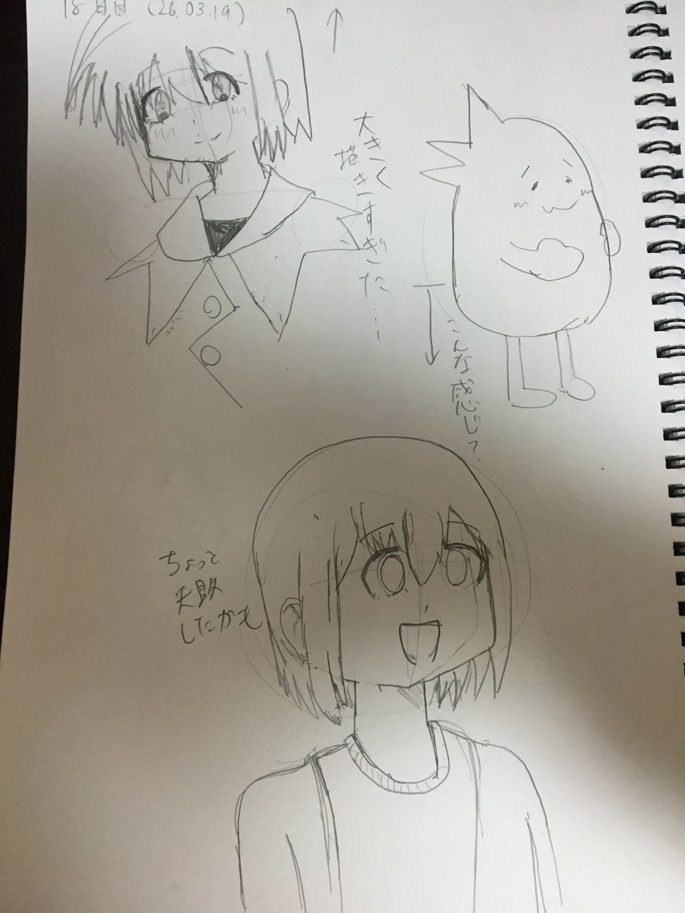

NASが欲しい
ブログ6日目。
現在、NextCloudをカゴヤのVPS上で、immichとJellyfinをメインPC上で動かしていますが、そろそろいい加減自宅サーバー上に移したいです。そうしないと自宅サーバーの用途がほぼ皆無に
最近まではSynologyのNASキットを検討していましたが、やはり最安モデルは2ベイまでで、それ以上となると高くつくし、既存のパーツを流用した方が安上がりとわかったため、最終的に、TrueNASに決定しました。
設定や手間はSynologyより難しいそうですが、まあ勉強と思えば問題はない。
というわけで、現在検討しているスペックは以下の通り。
- CPU - AMD Ryzen 3 4300G (4C/8T)
- RAM - 16GB DDR4 SDRAM (8GB DIMM x 2)
- NVMe SSD - 256GB NVMe SSD
- SATA HDD - 8TB TOSHIBA N100 x 最大4
- M/B - MSI PRO A520
まあ、多くのパーツが流用ですが、HDDだけは新しく買います。できればケースとかも…
そんじゃ、短いけどこんな感じで。
お絵描きのコーナー Link to heading
78日目。さくらとオリキャラ兼うちのこ。
